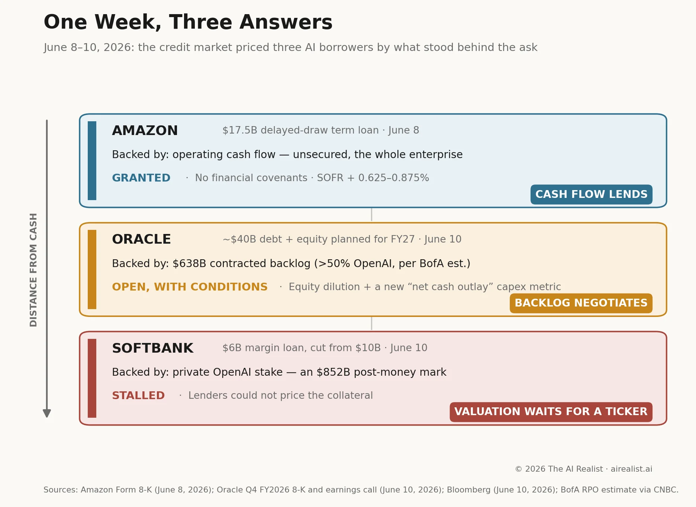

On June 8, Amazon signed a $17.5 billion loan it can draw at will, with no financial covenants attached. Two days later, Oracle told investors it would raise roughly $40 billion more and unveiled a new accounting measure to explain why its capex is not quite its capex. The same day, Bloomberg reported that SoftBank could not borrow $6 billion against its OpenAI stake.
The volume itself is no longer news. Morgan Stanley estimates nearly $236 billion of AI-linked debt has been issued globally through May, four times last year’s pace, and expects close to $570 billion for the full year [1]. UBS estimates that hyperscaler capex will consume close to 100% of operating cash flow in 2026, compared with a ten-year average of 40% [2]. Everyone now knows the buildout runs on debt. What last week revealed is who gets to borrow it, on what terms, and against what.
Start with the cheapest money.Amazon’s facility is a senior unsecured delayed-draw term loan led by Citibank: the company can pull funds as needed through September 30, each draw repayable over three years, at 0.625% to 0.875% over SOFR, the floating benchmark rate, depending on ratings [3]. It landed days after Amazon priced the largest Canadian-dollar corporate bond in history, a C$14 billion deal that drew more than C$28 billion in orders [4]. This is for a company whose trailing free cash flow has collapsed to $1.2 billion from $25.9 billion a year earlier, on the way to roughly $200 billion of capex this year [5]. The banks looked straight past the AI bet. Unsecured borrowing with no financial covenants is routine at Amazon’s rating — and that is the point. What stands behind the loan is the retail engine and AWS’s operating cash flow: businesses already earning, whatever the GPUs return tomorrow.
Oracle got the conditional money. Its fiscal Q4, reported June 10, beat the headline estimates: $19.2 billion in revenue, $2.11 in adjusted EPS, and remaining performance obligations — contracted future revenue — of $638 billion, up 363% in a year and up $85 billion in a single quarter [6]. The stock fell anyway, not the first time this fiscal year, a headline beat has been sold [7]. The funding side explains it. Free cash flow for the year was negative $23.7 billion. Oracle raised $43 billion in debt and $5 billion in equity in fiscal 2026, and plans roughly $40 billion more this year, including a previously announced $20 billion at-the-market equity program (new shares sold directly into the market) [8]. The buildout has crossed a line worth stating plainly: reported capex of $90–95 billion next fiscal year, against $90 billion of guided total revenue for the same year [8]. Oracle plans to spend its entire revenue, roughly, on capital expenditures.
And it introduced a new number. “Net cash outlay for capital expenditures” is guided around $70 billion for fiscal 2027, against the same $90–95 billion in reported capex; the gap is due to customers prepaying for GPUs or supplying their own [9]. Those arrangements now total $75 billion across Oracle’s large AI contracts, and the company says they substantially reduce the capital it must raise [10]. Read that twice. Oracle is publishing a table showing lenders which parts of its capex are really someone else’s. The arrangement is genuine — prepaid hardware does reduce Oracle’s funding needs — but it shifts risk rather than removing it. The $75 billion is banked; the rest of the backlog, largely anchored to OpenAI through Stargate [11], still depends on customers being able to pay, quarter after quarter, for years. When a borrower starts inventing measures to reassure the market, the market has started asking questions.
What did Amazon’s lenders see that SoftBank’s couldn’t? The answer is a hierarchy worth understanding before the second half of Morgan Stanley’s $570 billion arrives.
SoftBank asked for the third kind of money and didn’t get it. In May, it sought a $10 billion margin loan backed by its OpenAI stake; lender hesitation cut the target to $6 billion; on June 10, the talks stalled outright [12]. SoftBank may yet revive them. About $5 billion had been lined up, though it was unclear whether those commitments were verbal or written [13]. The sticking point was not OpenAI’s prospects. It was the collateral itself. OpenAI is private; its valuation is set by funding rounds rather than a liquid market, and a margin lender needs collateral that it can price daily and sell quickly. A stake last marked inside a $122 billion round at an $852 billion post-money valuation [14] turned out to be worth, for borrowing purposes, nothing yet. The stall came even though OpenAI had confirmed, two days earlier, a confidential filing for a US listing that could debut as soon as the fall [15]. Some of the same prospective lenders had said the IPO news made the loan more attractive. They still walked. The clock, meanwhile, is real: a $40 billion bridge loan taken on to fund SoftBank’s OpenAI commitments comes due in March 2027 [16]. Shares fell as much as 9.7% on the news, nine days after the company had overtaken Toyota as Japan’s most valuable [17].
Strip away the deal terms, and the three answers reduce to one question:what gets the lender repaid?Amazon’s creditors are repaid from businesses that predate the AI bet and would survive its disappointment. Oracle’s creditors are repaid from backlog: promises from customers whose own funding remains unproven. SoftBank’s would have been repaid from a mark: a number set by the last buyer in a private round, untested by any open market. The week’s pricing followed that gradient without sentiment.Cheapest against yesterday’s cash. Conditional, and increasingly explained, against tomorrow’s contracts. Refused against a number on a page.

None of this says the lending stops. Morgan Stanley expects issuance to accelerate in the second half [1]. It says the lending discriminates, and what it discriminates against is distance from cash. Each rung down the ladder, the borrower pays more, explains more, and pledges more. At the bottom rung, the market said no to collateral with a listing already in motion. A ticker will do what the mark could not; the prospect of one was not enough. This reading would be wrong if SoftBank closes its loan at or near $6 billion before the IPO prices, or if Oracle’s $40 billion raise comes as ordinary investment-grade debt without leaning on equity. Either outcome would mean the market lends against marks and backlog as readily as against cash flow after all.
Until then, the hierarchy stands.Cash flow lends. Backlog negotiates. Valuation waits for its ticker.
Notes
[1] Morgan Stanley research note, June 10, 2026, as reported byReuters via Tech Startups: ~$236 billion in AI-linked global debt issuance through May 31, 2026, roughly four times the prior-year pace; full-year 2026 forecast of nearly $570 billion. Analyst estimate, not a measured total.
[2] UBS estimate, as reported byTechTimes: 2026 hyperscaler capital spending on pace to consume close to 100% of operating cash flows, versus a 10-year average of about 40%. Analyst estimate.
[3]Amazon Form 8-K, filed June 10, 2026: term loan agreement dated June 8, 2026, Citibank N.A. as administrative agent; $17.5 billion senior unsecured delayed draw term loan facility; commitments expire September 30, 2026; three-year maturity per draw. SOFR margin of 0.625–0.875% depending on ratings and the absence of financial covenants per the filing as reported byYahoo Finance; the agreement retains customary covenants and events of default. Joint lead arrangers: Citibank, JPMorgan, BofA Securities, HSBC, Wells Fargo.
[4]Bloomberg: C$14 billion (~$10 billion) priced June 8, 2026, the largest corporate debt offering on record in Canadian dollars, with more than C$28 billion in orders.Reutersconfirms from the final pricing term sheet filed with the SEC: five tranches, maturities 2029–2056, surpassing Alphabet’s C$8.5 billion record set a month earlier.
[5]Yahoo Finance, per Amazon’s Q1 2026 results: trailing-twelve-month free cash flow of $1.2 billion versus $25.9 billion a year earlier; Q1 2026 capex of $44.2 billion; ~$200 billion full-year 2026 capex plan disclosed with Q4 2025 earnings.
[6]Oracle Q4 FY2026 earnings press release(Form 8-K exhibit, June 10, 2026): RPO of $638 billion, up 363% year-over-year and up $85 billion sequentially. Revenue and EPS beats perSherwood News: revenue $19.2 billion vs. $19.1 billion expected; adjusted EPS $2.11 vs. $1.96 expected ($2.03 excluding one-time net investment gains). One miss beneath the headlines, perYahoo Finance: total cloud revenue of $9.91 billion came in below the $9.99 billion consensus, with cloud applications light and cloud infrastructure ahead.
[7]Sherwood NewsandTheStreet. Shares fell in after-hours trading on June 10 despite the beats. Precedent: in Q2 FY2026, a 32.4% EPS beat was followed by a -10.8% day-of move (24/7 Wall St.). Note the broader tape: May CPI printed at a three-year high the same day, and all three major US indices fell, so the decline was not purely company-specific.
[8]Oracle Q4 FY2026 earnings press release: fiscal 2026 free cash flow of negative $23.7 billion; $43 billion raised in debt financing and $5 billion in equity financing in fiscal 2026; approximately $40 billion in combined debt and equity financing planned for fiscal 2027, including the previously announced $20 billion at-the-market equity issuance; fiscal 2027 total revenue guidance confirmed at $90 billion. The release adds that Oracle “does not expect to issue additional debt in calendar year 2026” — making the near-term portion of the raise equity-led by the company’s own statement. The $90–95 billion reported-capex figure for fiscal 2027 is from the earnings call (see [9]).
[9] Oracle Q4 FY2026earnings call, June 10, 2026: expected net cash outlay for capital expenditures of around $70 billion in fiscal 2027, with customer prepayments and timing impacts of $20–25 billion raising reported capex above that figure; the press release includes a reconciliation table for the new measure, and CFO Hilary Maxson detailed it on the call (CNBC). Fiscal 2026 net cash outlay was $48 billion after ~$8 billion of prepayment and timing impacts, against $55.7 billion of reported capex — up 162% year-over-year, with depreciation nearly doubling to $7.62 billion.
[10]Oracle Q4 FY2026 earnings press release: prepaid and customer-supplied hardware portions of large AI contracts total $75 billion, which the company states “substantially reduces the amount of capital Oracle must raise” for its AI datacenter buildout.
[11]Sherwood News: the RPO balance is largely anchored by Oracle’s OpenAI partnership under the $500 billion Stargate initiative. Bank of America analysts estimate that over 50% of the remaining performance obligation comes from OpenAI (CNBC); analyst estimate, not a company disclosure.
[12]Bloomberg, June 10, 2026: talks to raise at least $6 billion via a margin loan backed by SoftBank’s OpenAI stake have stalled; the initial $10 billion target was cut by 40% in May after lender hesitation. SoftBank may resume the margin loan later and is considering other fundraising options. A fair objection: SoftBank itself is rated BB+ with a negative outlook fromS&P(revised March 3, 2026, on the additional $30 billion OpenAI commitment), so borrower quality may have weighed on the talks. But margin lending looks to the collateral first, and the concern lenders voiced, per Bloomberg’s reporting, was the difficulty of valuing an unlisted company — not SoftBank’s own credit.
[13]Bloomberg via Yahoo Finance: approximately $5 billion had been secured before talks stalled, though it was unclear whether commitments were verbal or written.
[14]OpenAI announcement, March 31, 2026: the round closed with $122 billion in committed capital at a post-money valuation of $852 billion; confirmed byBloomberg. SoftBank contributed $30 billion of the round. The figure is a private-round valuation, not a market price — which is the point.
[15]Bloomberg via The Edge Singapore: OpenAI said on Monday, June 8, that it filed confidentially for a US IPO and is working with Goldman Sachs and Morgan Stanley on a potential listing as soon as the fall. Some prospective lenders on the margin loan had said they viewed it more favorably after news of the IPO preparation; the talks stalled regardless.
[16]Bloomberg via Yahoo FinanceandQuartz: a $40 billion bridge loan taken on to fund SoftBank’s OpenAI commitments comes due in March 2027; SoftBank has indicated it intends to cover it from existing assets plus additional financing. Counterpoint on severity from Hua Cheng, head of Asia credit research at AllianceBernstein, who called the stalled margin loan one piece of a larger puzzle and not a standalone red flag.
[17]Bloomberg via Yahoo Finance: shares declined as much as 9.7% on June 10; SoftBank had overtaken Toyota as Japan’s most valuable company by market capitalization on June 1 (Bloomberg,Nikkei Asia) — the first time in more than two decades. SoftBank’s credit default swaps had narrowed to about 307 basis points from a May 20 peak above 367 — the credit market was already charging for the OpenAI concentration before the loan stalled.